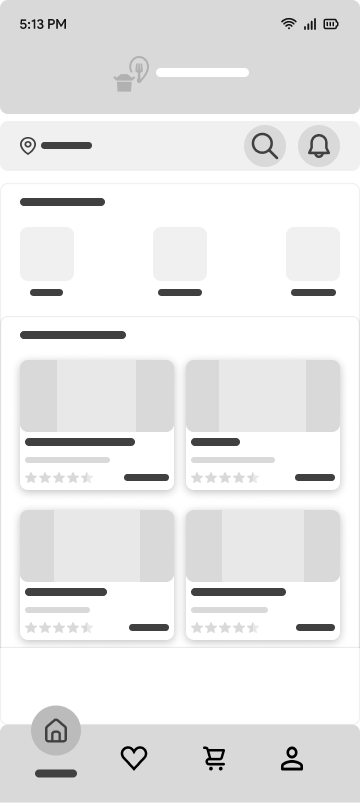
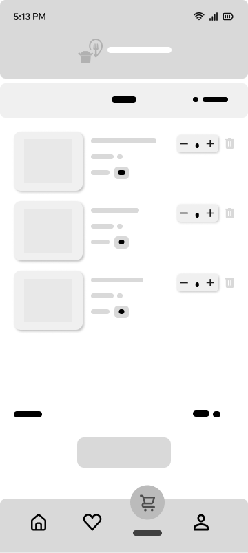
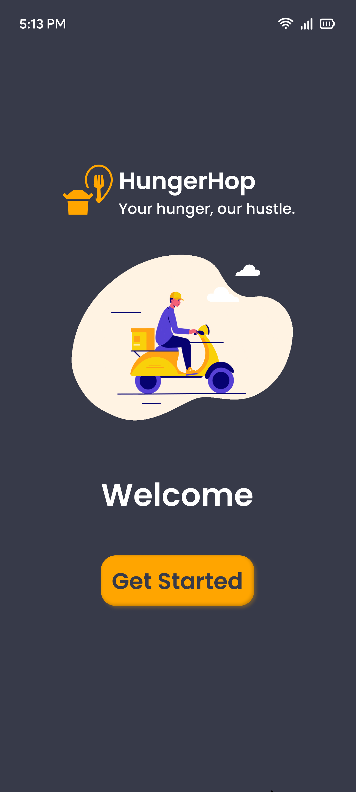
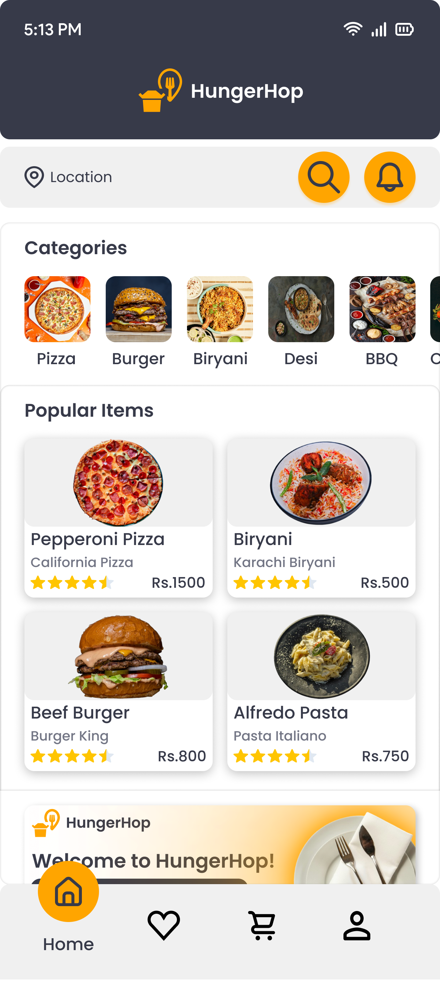
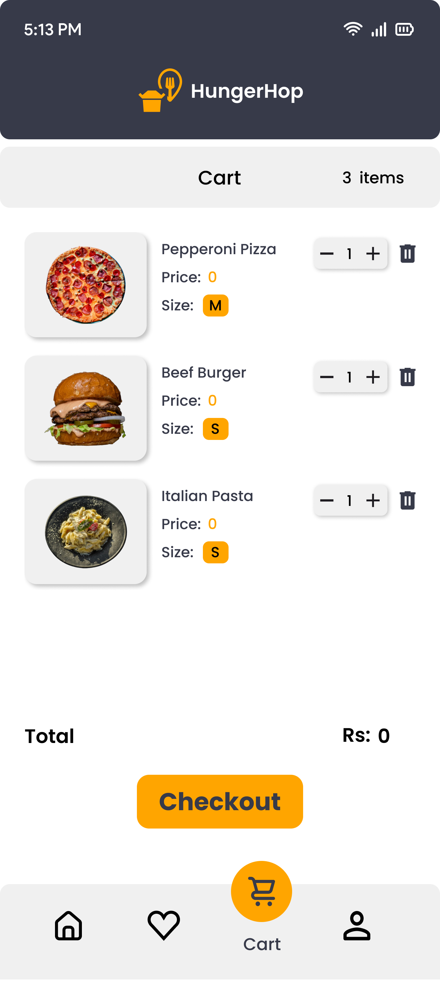

Project Overview
In today's fast-paced world, busy professionals and bachelors often struggle to find time for cooking or simply don't have the skills. HungerHop was designed to solve this everyday problem by providing a seamless food delivery experience that's quick, intuitive, and satisfying.
The app targets time-constrained individuals who value convenience and want access to quality fast food without the friction of complicated ordering processes or lengthy wait times.
The Problem
Through user interviews with busy professionals and bachelor living alone, I identified key pain points in current food delivery experiences:
- Decision Fatigue: Too many options without clear categorization makes ordering overwhelming
- Complex Checkout: Lengthy ordering processes discourage quick meal decisions
- Hidden Costs: Users frustrated by surprise fees appearing at checkout
- No Quick Access: Can't easily reorder favorites or find popular items
- Poor Discovery: Difficult to explore different food categories efficiently
Target Audience
Primary Users: Busy professionals (ages 22-40) who work long hours and need convenient meal solutions without spending time cooking.
Secondary Users: Bachelors and students living alone who lack cooking skills or kitchen facilities and rely on food delivery for daily meals.
User Goals: Order food quickly, discover new restaurants easily, track orders in real-time, and enjoy transparent pricing with no surprises.
Design Process
1. Research & Discovery
I analyzed leading food delivery apps including Uber Eats, DoorDash, and Zomato to understand industry standards and user expectations. Key insight: users wanted faster ordering with fewer steps and better category organization.
2. User Personas & Journey Mapping
I created detailed personas representing different user types—from busy professionals ordering lunch during work to bachelors planning dinner. This helped prioritize features like quick category browsing and streamlined checkout.
3. Information Architecture
The app structure emphasizes speed and simplicity:
- Home → Category Selection → Item Details → Cart → Checkout
- Popular Items → Quick Add to Cart
- Favorites → Reorder with One Tap
4. Wireframing & Prototyping
Starting with low-fidelity wireframes, I explored different layouts for category display and cart functionality. The focus was on minimizing steps between craving and ordering.


Design Decisions
Color Palette
The warm, appetizing color scheme was chosen to stimulate appetite and convey energy:
Why Orange & Yellow? These warm colors are scientifically proven to stimulate appetite and create feelings of happiness and energy—perfect for a food delivery app. The charcoal background provides sophistication while making food images pop.
Typography & Visual Hierarchy
Bold, readable typography ensures quick scanning. Item names, prices, and ratings are prominently displayed, allowing users to make informed decisions at a glance without reading lengthy descriptions.
Key Features & Screens

1. Engaging Splash Screen
The splash screen immediately establishes brand identity with the tagline "Your hunger, our hustle" and a friendly illustration of delivery service. The playful yet professional tone sets user expectations for a pleasant ordering experience.

2. Intuitive Home & Discovery
The home screen features smart organization with multiple discovery paths:
- Category Icons: Quick access to Pizza, Burger, Biryani, Desi, BBQ, and more with appetizing food photography
- Popular Items Section: Showcases trending dishes like Pepperoni Pizza (Rs.1500), Biryani (Rs.500), Beef Burger (Rs.800), and Alfredo Pasta (Rs.750)
- Star Ratings: Visual feedback helps users choose high-quality options
- Restaurant Attribution: Each item shows its source (California Pizza, Burger King, etc.)
- Welcome Banner: Personalized greeting creates a friendly, inviting atmosphere

3. Streamlined Cart Experience
The cart interface prioritizes clarity and control:
- Visual Product Cards: High-quality food images with item names, sizes (M, S), and prices
- Quantity Controls: Easy-to-tap minus/plus buttons for adjusting order quantities
- Quick Delete: Trash icon for instant item removal
- Item Counter: Clear "3 items" indicator at the top
- Prominent Total: Large price display with bold "Checkout" button
- Bottom Navigation: Persistent access to Home, Favorites, Cart, and Profile
Challenges & Solutions
Challenge 1
Problem: How to help users quickly find what they want to eat among hundreds of options
Solution 1
Created dual discovery paths: visual category icons for browsing and popular items section for quick decisions
Challenge 2
Problem: Reducing friction in the checkout process to prevent cart abandonment
Solution 2
Designed a clean cart with all controls on one screen and a prominent checkout button—no hidden steps
Challenge 3
Problem: Making food photography appetizing while maintaining fast load times
Solution 3
Used optimized, high-quality food images with consistent styling that creates visual appetite appeal
Design Principles
Speed Over Everything
Every screen is designed to minimize taps between hunger and satisfaction
Visual First
Appetizing food photography drives decisions faster than text descriptions
Transparent Pricing
All costs displayed upfront—no surprises at checkout to build trust
Social Proof
Star ratings and popular items help users make confident choices quickly
Key Takeaways
- Reduce decision fatigue: Clear categories and popular items help hungry users decide faster
- Visual appetite appeal: High-quality food photography is essential for food delivery success
- Speed wins conversions: Every unnecessary tap increases cart abandonment—simplicity is key
- Trust through transparency: Showing prices, ratings, and restaurant names builds user confidence
Impact & Results
HungerHop demonstrates my ability to design consumer-facing apps that balance beautiful aesthetics with functional simplicity. The design focuses on removing friction from the ordering process.
- Created an intuitive category-based navigation system
- Designed a streamlined cart with transparent pricing
- Built engaging visual hierarchy highlighting popular items
- Developed a warm, appetizing color scheme that drives engagement
Next Steps
If this project were to move forward, I would:
- Add real-time order tracking with delivery person location and ETA
- Design personalized recommendations based on order history and preferences
- Create a rewards program to encourage repeat orders
- Implement dietary filters for vegetarian, vegan, halal, and other preferences
- Add social features for sharing favorite restaurants and ordering together